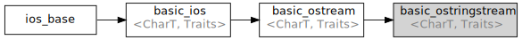

std::basic_ostringstream
From cppreference.com
| Defined in header <sstream>
|
||
| template< class CharT, |
(until C++11) | |
| template< class CharT, |
(since C++11) | |
The class template basic_ostringstream implements output operations on memory (std::basic_string) based streams. It essentially wraps a raw string device implementation (basic_stringbuf) into a higher-level interface (basic_ostream). The complete interface to unique basic_stringbuf members is provided.


Inheritance diagram
Two specializations for common character types are also defined:
| Defined in header <sstream>
| |
| Type | Definition |
| ostringstream | basic_ostringstream<char> |
| wostringstream | basic_ostringstream<wchar_t> |
Contents |
[edit] Member types
| Member type | Definition |
| char_type | CharT |
| traits_type | Traits |
| int_type | Traits::int_type |
| pos_type | Traits::pos_type |
| off_type | Traits::off_type |
| allocator_type | Allocator (since C++11) |
[edit] Member functions
| constructs the string stream (public member function) | |
| (C++11) |
moves the string stream (public member function) |
| (C++11) |
swaps two string streams (public member function) |
| returns the underlying raw string device object (public member function) | |
String operations | |
| gets or sets the contents of underlying string device object (public member function) | |
Inherited from std::basic_ostream
Member functions
Formatted input | |
| inserts formatted data (public member function of std::basic_ostream) | |
Unformatted input | |
| inserts a character (public member function of std::basic_ostream) | |
| inserts blocks of characters (public member function of std::basic_ostream) | |
Positioning | |
| returns the output position indicator (public member function of std::basic_ostream) | |
| sets the output position indicator (public member function of std::basic_ostream) | |
Miscellaneous | |
| synchronizes with the underlying storage device (public member function of std::basic_ostream) | |
Member classes
| implements basic logic for preparation of the stream for output operations (public member class of std::basic_ostream) | |
Inherited from std::basic_ios
Member types
| Member type | Definition |
| char_type | CharT |
| traits_type | Traits |
| int_type | Traits::int_type |
| pos_type | Traits::pos_type |
| off_type | Traits::off_type |
State functions | |
| checks if no error has occurred i.e. I/O operations are available (public member function of std::basic_ios) | |
| checks if end-of-file has been reached (public member function of std::basic_ios) | |
| checks if a recoverable error has occurred (public member function of std::basic_ios) | |
| checks if a non-recoverable error has occurred (public member function of std::basic_ios) | |
| checks if an error has occurred (synonym of fail()) (public member function of std::basic_ios) | |
| (until C++11) (since C++11) |
checks if no error has occurred (synonym of !fail()) (public member function of std::basic_ios) |
| returns state flags (public member function of std::basic_ios) | |
| sets state flags (public member function of std::basic_ios) | |
| clears error and eof flags (public member function of std::basic_ios) | |
Formatting | |
| copies formatting information (public member function of std::basic_ios) | |
| manages the fill character (public member function of std::basic_ios) | |
Miscellaneous | |
| manages exception mask (public member function of std::basic_ios) | |
| sets the locale (public member function of std::basic_ios) | |
| manages associated stream buffer (public member function of std::basic_ios) | |
| manages tied stream (public member function of std::basic_ios) | |
| narrows characters (public member function of std::basic_ios) | |
| widens characters (public member function of std::basic_ios) | |
Inherited from std::ios_base
Member functions
Formatting | |
| manages format flags (public member function of std::ios_base) | |
| sets specific format flag (public member function of std::ios_base) | |
| clears specific format flag (public member function of std::ios_base) | |
| manages decimal precision of floating point operations (public member function of std::ios_base) | |
| manages field width (public member function of std::ios_base) | |
Locales | |
| sets locale (public member function of std::ios_base) | |
| returns current locale (public member function of std::ios_base) | |
Internal extensible array | |
| [static] |
returns a program-wide unique integer that is safe to use as index to pword() and iword() (public static member function of std::ios_base) |
| resizes the private storage if necessary and access to the long element at the given index (public member function of std::ios_base) | |
| resizes the private storage if necessary and access to the void* element at the given index (public member function of std::ios_base) | |
Miscellaneous | |
| registers event callback function (public member function of std::ios_base) | |
| [static] |
sets whether C++ and C IO libraries are interoperable (public static member function of std::ios_base) |
Member classes | |
| stream exception (public member class of std::ios_base) | |
| initializes standard stream objects (public member class of std::ios_base) | |
Member types and constants | |||||||||||||||||||||||||||||||||||||||||||||||||||||||||||||||||||||||||||||
| Type | Explanation | ||||||||||||||||||||||||||||||||||||||||||||||||||||||||||||||||||||||||||||
| stream open mode type
The following constants are also defined:
(typedef) | |||||||||||||||||||||||||||||||||||||||||||||||||||||||||||||||||||||||||||||
| formatting flags type
The following constants are also defined:
(typedef) | |||||||||||||||||||||||||||||||||||||||||||||||||||||||||||||||||||||||||||||
| state of the stream type
The following constants are also defined:
(typedef) | |||||||||||||||||||||||||||||||||||||||||||||||||||||||||||||||||||||||||||||
| seeking direction type
The following constants are also defined:
(typedef) | |||||||||||||||||||||||||||||||||||||||||||||||||||||||||||||||||||||||||||||
| specifies event type (enum) | |||||||||||||||||||||||||||||||||||||||||||||||||||||||||||||||||||||||||||||
| callback function type (typedef) | |||||||||||||||||||||||||||||||||||||||||||||||||||||||||||||||||||||||||||||